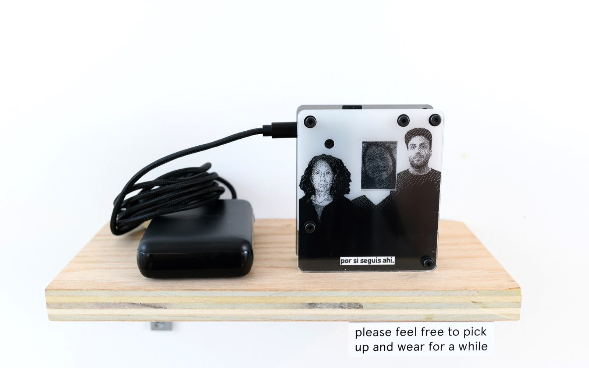
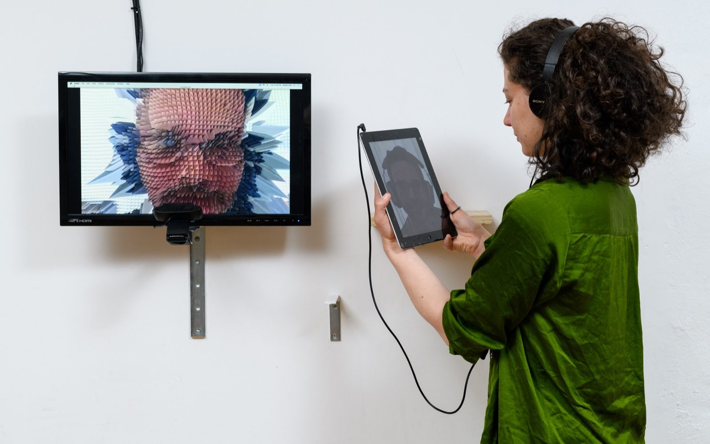

We are excited to announce Poetic Computation: 7 years of SFPC an exhibition at the Westbeth Gallery (155 Bethune Street), NYC. January 12 - January 23, 2020. Opening January 16, 6pm. The exhibition, created with volunteer efforts, will feature projects by our teachers and alums.

Ariel Uzal – por si seguís ahí
(in case you’re still there)
Por si seguís ahí is a wearable device intended to find a missing family member. It’s designed around a family portrait with an empty space. The device uses a small camera to search its surroundings for people, isolating any faces that it finds and placing them within the portrait.
auzal.net
Ariel Uzal – por si seguís ahí
(in case you’re still there)
Por si seguís ahí is a wearable device intended to find a missing family member. It’s designed around a family portrait with an empty space. The device uses a small camera to search its surroundings for people, isolating any faces that it finds and placing them within the portrait.
auzal.net

Joseph Wilk – How to be seen
As a remote student to SFPC, Joseph experiences the people and space of the school through cameras, screens and software. How to be seen attempts to bring the artist into the physical space that he has never physically experienced through an interactive, streamed live coding performance.
repl-electric.com
Joseph Wilk – How to be seen
As a remote student to SFPC, Joseph experiences the people and space of the school through cameras, screens and software. How to be seen attempts to bring the artist into the physical space that he has never physically experienced through an interactive, streamed live coding performance.
repl-electric.com
Co-organizers,
Lauren Gardner, Tega Brain, Taeyoon Choi, Brian Solon, Alex Miller;
Co-curators,
Nabil Hassein, Tiri Kananuruk, Sebastian Morales, Zach Lieberman, Zainab Aliyu, Dan Gorelick, Nitcha Tothong; Contributors,Nitcha Tothong, Kate Chanban, Roy Macdonlad, Joseph Wilk, Tim Burcham, Matthew Ortega, Lynne Yun, Sarah Howorka, Nitcha Tothong. Ishac Bertran, Shannon Finnegen, Andrew Badr, Sean Catangui, American Artist, Bomani Oseni McClendon, Josh Michaels, Everest Pipkin, Kate Chanba, Andrew Kleindolph, Sam Lavigne, Taylor Levy, Allison Parrish, Christo Allegra, Colin Wang, Yeseul Song, Yeseul Song and Michael Simpson - KoalaTokki, Susie Fu, Cori Kresge, Phil Schleihau[f], Char Stiles and Dan Gorelick, and more.
Artists,
Artists Names
Graphic & Web Designer,
Ritu Ghiya
Supported by,
ARTECHOUSE